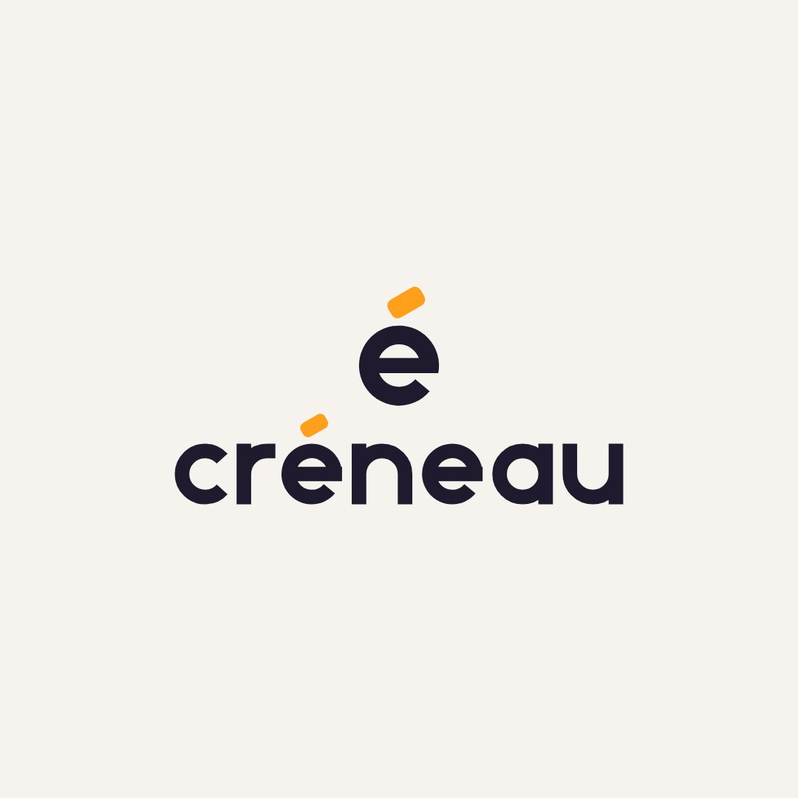
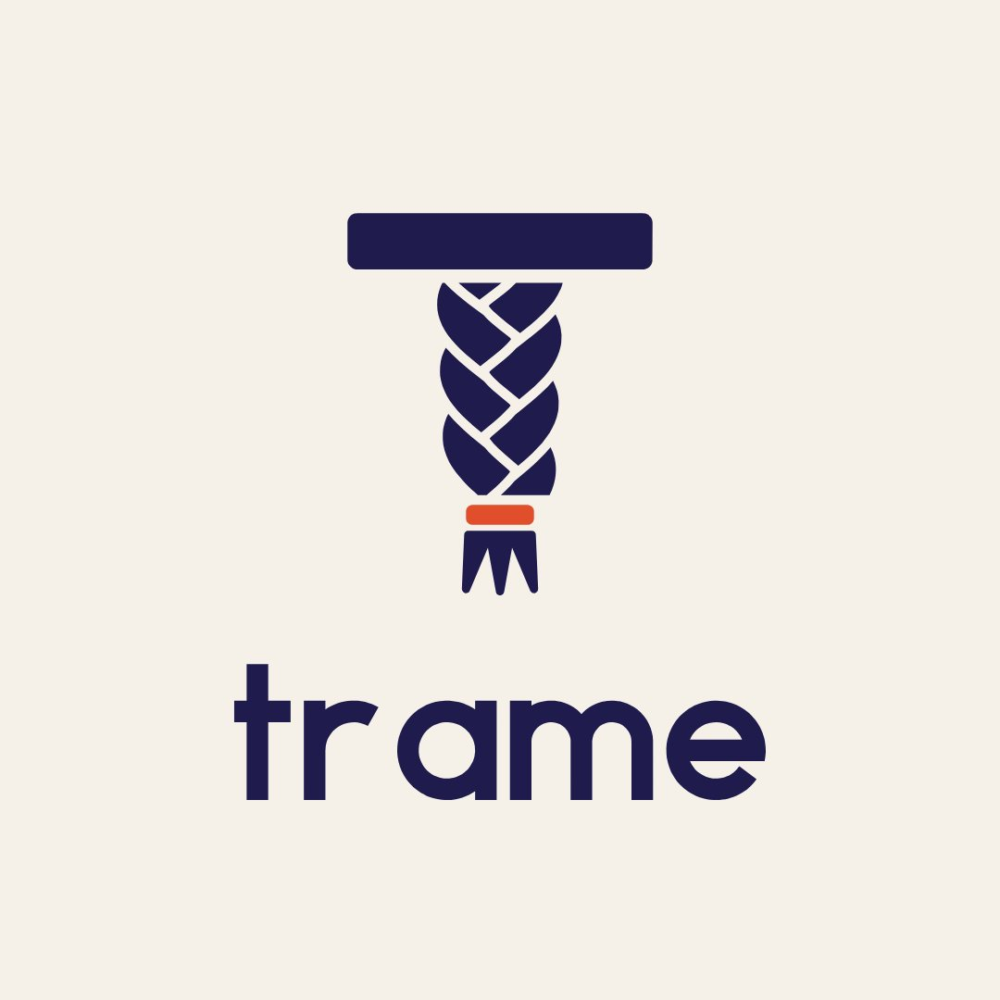
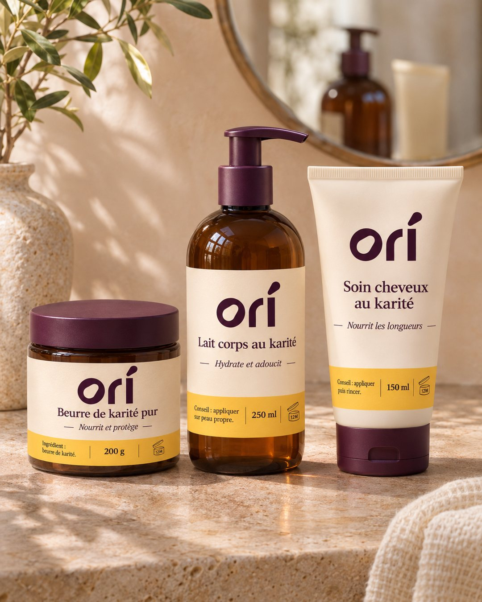
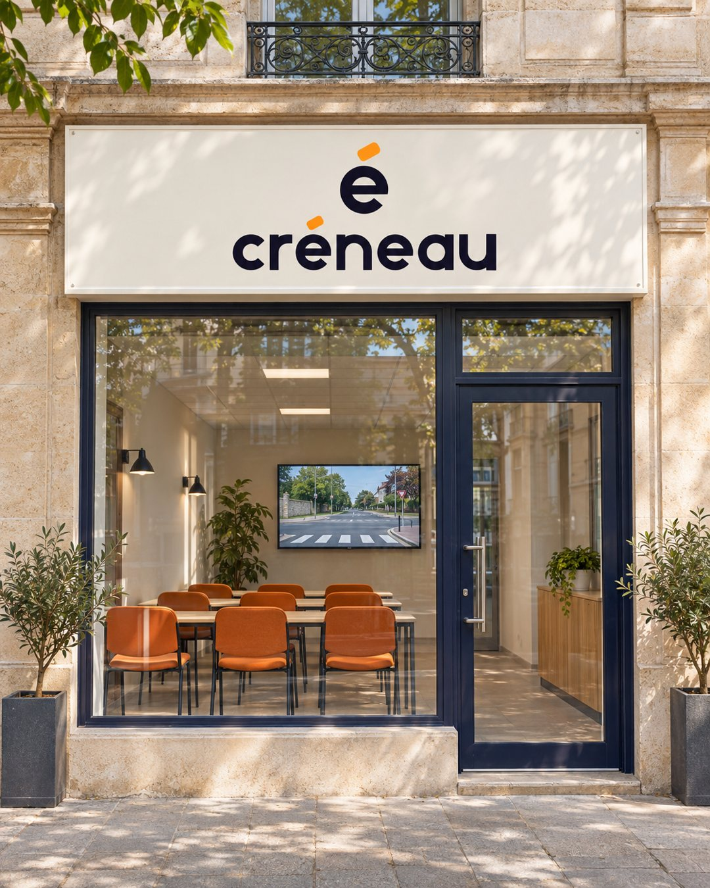
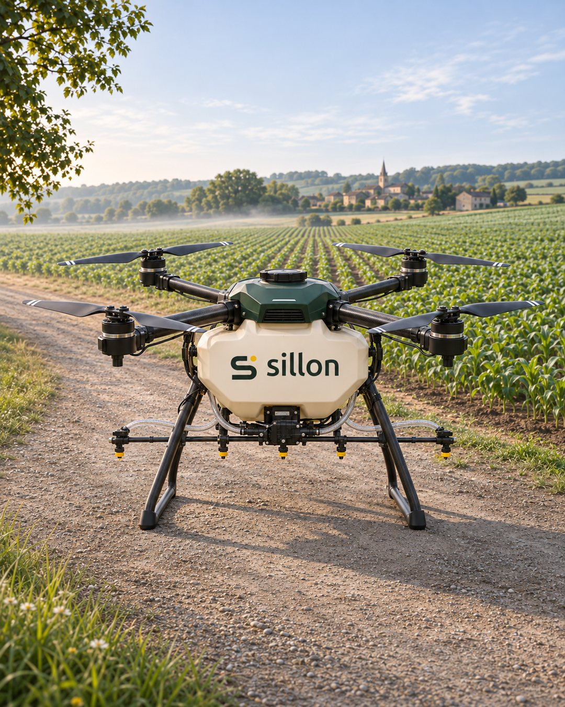
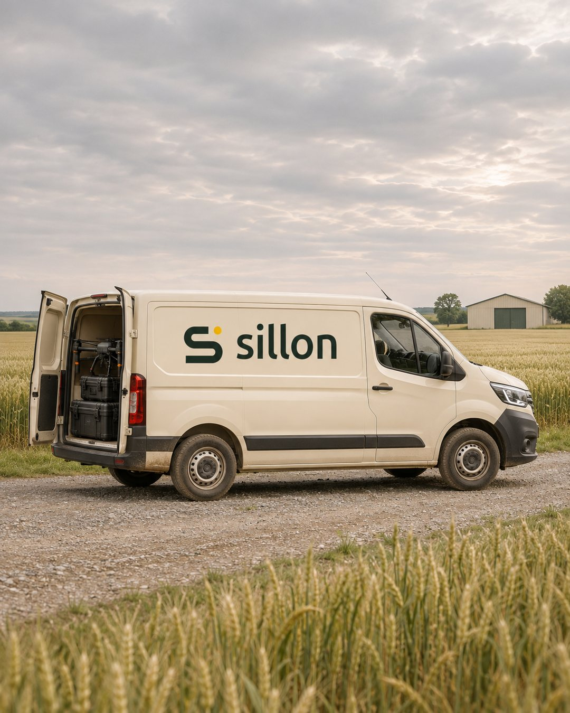
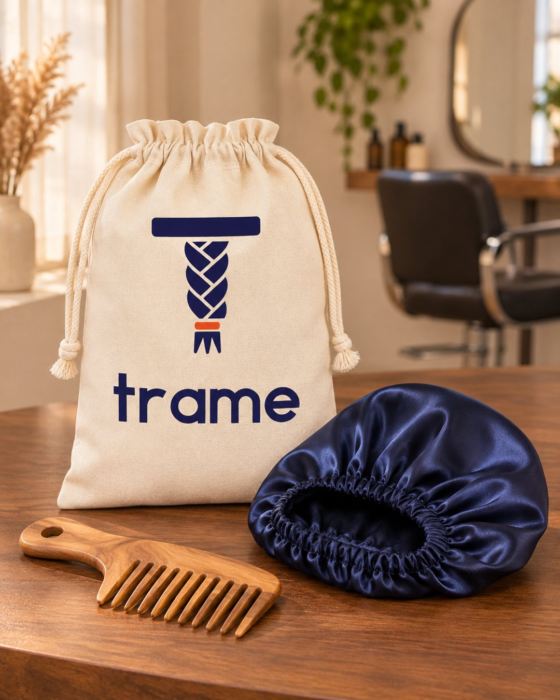

Ce qu'il te faut
Claude
C'est lui qui dessine ton logo, avec le skill installé.
Le skill
Gratuit, à télécharger juste en dessous.
ChatGPT
Avec la création d'images, pour les mises en situation.
Étape 1 · Récupérer le skill
Le skill s'appelle Logo Design. Il a été créé par le développeur kaankiziltug et il est en accès libre. Tu peux le télécharger ici ou le prendre directement sur GitHub.
Besoin d'aide pour installer un skill ? Regarde la vidéo d'installation.
Étape 2 · Demander ton logo
Ouvre une nouvelle conversation avec Claude et décris ton activité en une ou deux phrases. Il ne dessine rien tout de suite : il te pose d'abord quelques questions sur ta marque, écarte les clichés de ton secteur, puis te montre trois pistes. Tu choisis, et il te livre le kit complet : les versions du logo, les couleurs, les icônes.
Je l'ai testé sur plusieurs activités. Voici les quatre logos retenus :


Étape 3 · Voir ton logo dans la vraie vie
Un logo seul sur fond blanc, ça ne dit pas grand-chose. Ouvre ChatGPT, joins ton logo, colle ce prompt et remplace la description par la tienne. C'est lui qui choisit où ton logo apparaîtrait vraiment : le packaging pour une marque de cosmétiques, la devanture pour une auto-école, le drone pour une startup agricole.





Si une image ne te plaît pas, réponds simplement dans la même conversation : « Refais la deuxième dans une boutique », « Le pot est trop vide, ajoute une vraie étiquette ». Les marques de cette page ont été inventées pour la démonstration.